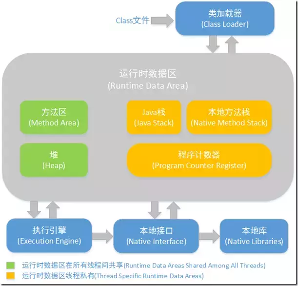
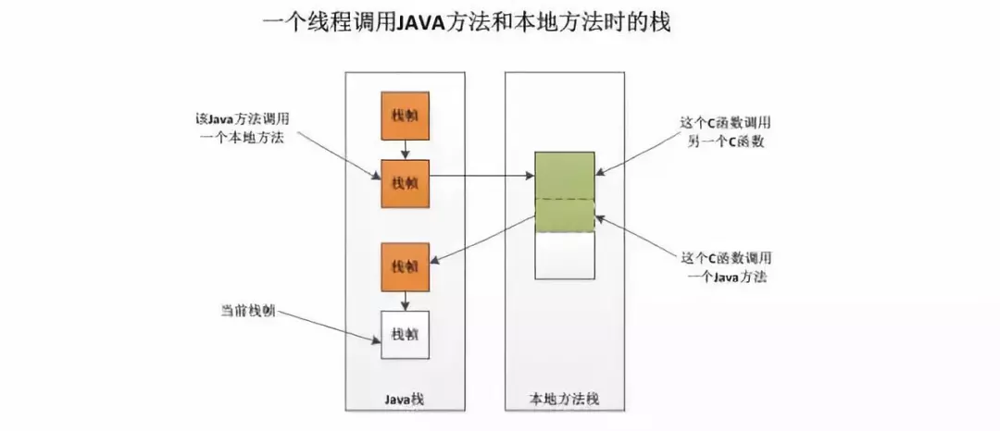
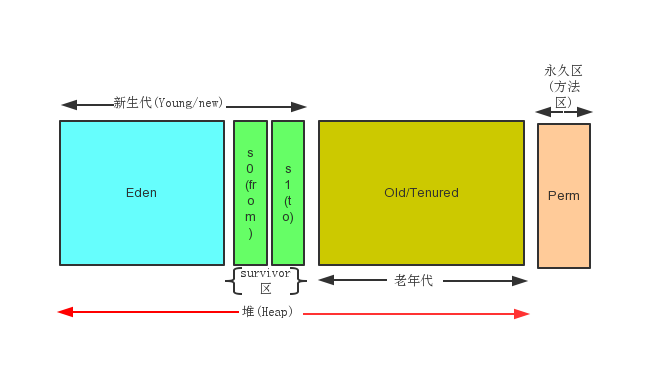
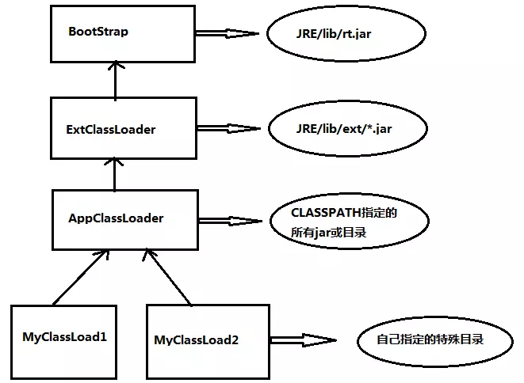

一些JVM 相关的问题和回答。
jVM 内存结构，


程序计数器
- 线程私有的。 每个线程有一个， 线程之间互不影响， 独立存储。
当前指令的地址， 当cpu 要执行的时候， 需要从里拿到当前需要执行的指令所在存储单元的地址， 然后根据地址取得指令。 得到之后， 自动加一， 或者根据转移至诊得到下一条指令。 如此循环。
多线程每个是不同的所以是线程独立的。
++此内存区域是唯一一个在 Java虚拟机规范中没有规定任何 OutOfMemoryError 情况的区域。
++
- cpu 执行线程切换如何知道从哪里继续。 只是java 虚拟机指令， 如果native 则是undefined。
虚拟机栈
线程私有，它的生命周期和线程相同。
描述的是java方法执行的内存模型：每个方法在执行的同时多会创建一个栈帧用于存储局部变量表、操作数栈、动态链表、方法出口等信息。
-Xss参数设置栈容量 例： -Xss128k
栈 可能如下异常：
- 请求深度超过允许的 stackoverflowError
- 可以动态扩展， 到了无法申请内存， Outofmemory
本地方法栈
同虚拟机栈，只不过本地方法栈位虚拟机使用到的native方法服务。
==Sun HotSpot虚拟机把本地方法栈和虚拟机栈合二为一。==
两个栈的图

java堆
- 线程共享
- 主要用于分配对象实例和数组
参数
- -Xms参数设置最小值
- -Xmx参数设置最大值 例：VM Args: -Xms20m -Xmx20m -XX:+HeapDumpOnOutOfMemoryError
- 若-Xms=-Xmx,则可避免堆自动扩展。
- -XX:+HeapDumpOnOutOfMemoryError可以让虚拟机在出现内存溢出是dump出当前的内存堆转储快照。
没有空间 outOfMemeorError
方法区
用于存储已被虚拟机加载的类信息、常量、静态变量、即使编译后的代码等数据。 ==别名永久代（Permanent Generation）==
- -XX:MaxPermSize设置上限
- -XX:PermSize设置最小值 例：VM Args:-XX:PermSize=10M -XX:MaxPermSize=10M
- 运行时常量池(Runtime Constant Pool)是方法区的一部分。
java8 元空间
到了Java 8 ,永久代被彻底地移除了 JVM,取而代之的是元空间 (Metaspace)：JDK 8开始将类的元数据放到本地堆内存(native heap)中，这一块区域就叫 Metaspace,关于 Metaspace 的介绍请参考：https://link.juejin.im/?target=https%3A%2F%2Fjava- –> JDK 1.6下，会出现“PermGen Space”的内存溢出，而在 JDK 1.7和 JDK 1.8 中，会出现堆内存溢出，并且 JDK 1.8中 PermSize 和 MaxPermGen 已经无效。因此，可以大致验证 JDK 1.7 和 1.8 将字符串常量由永久代转移到堆中
而从JDK 1.7开始，字符串常量和符号引用等被移除永久代:
- 符号引用迁移至系统堆内存 (Native Heap)
- 字符串字面量迁移至 Java堆(Java Heap)
java.lang.OutOfMemoryError: PermGen space “这个异常。这里的 “PermGen space”其实指的就是方法区。不过方法区和“PermGen space”又有着本质的区别。前者是 JVM 的规范，而后者则是 JVM 规范的一种实现，并且只有 HotSpot 才有 “PermGen space”，
直接内存
- 直接内存并不是虚拟机运行时数据区的一部分。
- 在NIO中，引入了一种基于通道和缓冲区的I/O方式，它可以使用native函数直接分配堆外内存，然后通过一个存储在java堆中的DirectByteBuffer对象作为这块内存的引用进行操作。
- -XX:MaxDirectMemorySize设置最大值，默认与java堆最大值一样。
- 例：-XX:MaxDirectMemorySize=10M -Xmx20M
其他
- 永久带算在堆内存还是直接称为方法区。 算了。
JVM 堆的基本结构。
- 对于大部分应用， java heap 是jvm 管理的最大的一块。 是被所有线程共享的一块内存区域。 目的是存放对象实例。
- 细分为， 新生代和老生带。 再细致一点就是Eden， from survivor， to survivor。
- Young：主要是用来存放新生的对象。
- Old：主要存放应用程序中生命周期长的内存对象。
- Permanent：是指内存的永久保存区域，主要存放Class和Meta的信息,Class在被 Load的时候被放入PermGen space区域


垃圾回收算法的过程 你了解的垃圾收集器？ Cms收集器的过程
eden满了minor gc，升到老年代的对象大于老年代剩余空间full gc，或者小于时被HandlePromotionFailure参数强制full gc；gc与非gc时间耗时超过了GCTimeRatio的限制引发OOM，调优诸如通过NewRatio控制新生代老年代比例，通过MaxTenuringThreshold控制进入老年前生存次数等
- 引用计数：一个对象被引用计数器加一，取消引用计数器减一，引用计数器为0才能被回收。优点：简单。缺点：不能解决循环引用的问题，比如A引用B，B引用A，但是这两个对象没有被其他任何对象引用，属于垃圾对象，却不能回收；每次引用都会附件一个加减法，影响性能。
现在应该不用了。
- 标记清除法：分为两个阶段：标记阶段和清除阶段。标记阶段通过根节点标记所有可达对象，清除阶段清除所有不可达对象。缺点：因为清除不可达对象之后剩余的内存不连续，++会产生大量内存碎片，不利于大对象的分配++。
根搜索法
- compacting算法 或 标记-整理算法 又叫 标记压缩算法：
标记-整理算法采用标记-清除算法一样的方式进行对象的标记，但在清除时不同，在回收不存活的对象占用的空间后，会将所有的存活对象往左端空闲空间移动，并更新对应的指针。标记-整理算法是在标记-清除算法的基础上，又进行了对象的移动，因此成本更高，但是却解决了内存碎片的问题。在基于Compacting算法的收集器的实现中，一般增加句柄和句柄表。
++分代算法：新生代使用复制算法，老生带使用标记清除算法或者标记压缩算法。几乎所有的垃圾回收期都区分新生代和老生带。
++
1.所有新生成的对象首先都是放在年轻代的。年轻代的目标就是尽可能快速的收集掉那些生命周期短的对象。
年老代（Old Generation）
1.在年轻代中经历了N次垃圾回收后仍然存活的对象，就会被放到年老代中。因此，可以认为年老代中存放的都是一些生命周期较长的对象。
用于存放静态文件，如Java类、方法等。持久代对垃圾回收没有显著影响，但是有些应用可能动态生成或者调用一些class，例如Hibernate 等，在这种时候需要设置一个比较大的持久代空间来存放这些运行过程中新增的类。
复制算法：将内存空间分成相同的两块，每次只是用其中的一块，垃圾回收时，将正在使用的内存中的存活对象复制到另外一块空间，然后清除正在使用的内存空间中的所有对象，这种回收算法适用于新生代垃圾回收。优点：垃圾回收对象比较多时需要复制的对象恨少，性能较好；不会存在内存碎片。缺点：将系统内存折半。
垃圾收集器
- CMS(Concurrent Mark Sweep)收集器（标记-清理算法）
高并发、低停顿，追求最短GC回收停顿时间，cpu占用比较高，响应时间快，停顿时间短，多核cpu 追求高响应时间的选择
看名字就知道，CMS是一款并发、使用标记-清除算法的gc。CMS是针对老年代进行回收的GC。
- 3.1 初始标记(STW)
- 3.2 并发标记
- 3.3 并发预清理
- 3.4 重标记(STW)
- 3.5 并发清理
- 3.6 重置
下面只是转一下
Serial收集器（复制算法)
新生代单线程收集器，标记和清理都是单线程，优点是简单高效。
Serial Old收集器(标记-整理算法)
老年代单线程收集器，Serial收集器的老年代版本。
ParNew收集器(停止-复制算法)
新生代收集器，可以认为是Serial收集器的多线程版本,在多核CPU环境下有着比Serial更好的表现。
Parallel Scavenge收集器(停止-复制算法)
并行收集器，追求高吞吐量，高效利用CPU。吞吐量一般为99%， 吞吐量= 用户线程时间/(用户线程时间+GC线程时间)。适合后台应用等对交互相应要求不高的场景。
Parallel Old收集器(停止-复制算法)
Parallel Scavenge收集器的老年代版本，并行收集器，吞吐量优先
常用的GC策略， 什么时候触发YGC， FGC
# Java的full gc
# Full gc会导致什么问题
minor GC 就是 eden survivor 空间的关联。
- 如果JVM 不能创建新的object 就MGC 比如Eden 满了。 应该没有老生代什么事。
- Against common belief, all Minor GCs do trigger stop-the-world pauses, stopping the application threads. For most of the applications, the length of the pauses is negligible latency-wise. 也就是其实时间感受不到。
- so every Minor GC cleans the Young generation.
major GC 和 FGC
Major GC is cleaning the Tenured space.
Full GC is cleaning the entire Heap – both Young and Tenured spaces.
注意， 很多时候major gc 是由ygc trigger的。
JVM 常用启动参数， # JVM 配置和调优参数有哪些， 分别什么作用。
-Xmn，-Xms等具体参数设置
- Xms设置堆的最小空间大小。
- -Xmx设置堆的最大空间大小。
- -XX:NewSize设置新生代最小空间大小。
- -XX:MaxNewSize设置新生代最大空间大小。
- -XX:PermSize设置永久代最小空间大小。
- -XX:MaxPermSize设置永久代最大空间大小。
- -Xss设置每个线程的堆栈大小。
没有直接设置老年代的参数，但是可以设置堆空间大小和新生代空间大小两个参数来间接控制。
老年代空间大小=堆空间大小-年轻代大空间大小
从更高的一个维度再次来看JVM和系统调用之间的关系
方法区和堆是所有线程共享的内存区域；而Java栈、本地方法栈和程序计数器是运行是线程私有的内存区域。
内存溢出的几种情况，
string.intern
意思是说当调用 intern 方法时，如果池已经包含一个等于此 String 对象的字符串（该对象由 equals(Object) 方法确定），则返回池中的字符串。否则，将此 String 对象添加到池中，并且返回此 String 对象的引用。
jdk1.6中 intern 方法会把首次遇到的字符串实例复制到永久待（常量池）中，并返回此引用
- jdk1.7中，只是会把首次遇到的字符串实例的引用添加到常量池中（没有复制），并返回此引用。
1 | public class StringInternTest { |
所以在jdk1.7中执行上面代码，str1返回true是引用他们指向的都是str1对象（堆中）（池中不存在，返回原引用），而str2返回false是因为池中已经存在”java”了（关键词），所以返回的池的对象，因此不相等。
例子 经验
曾经CMS outof memory issue
因为object 数目过多
MAT 来dump 出来， 分析哪个object， 调整参数
代码有的copy 没有必要。 把这部分去掉。 少copy
http://icyfenix.iteye.com/blog/715301
垃圾收集器的问题
“地球人都知道，Java有个东西叫垃圾收集器，它让创建的对象不需要像c/cpp那样delete、free掉，你能不能谈谈，GC是在什么时候，对什么东西，做了什么事情？”
3.能说出新生代、老年代结构，能提出minor gc/full gc
- 比如eden 满了 minor gc。
- 升到老年代的对象大于剩余空间了 full gc；
分析第二个问题：“对什么东西”：
3.从gc root开始搜索，搜索不到的对象。
4.从root搜索不到，而且经过第一次标记、清理后，仍然没有复活的对象。
“做什么事情”
不同代做的不同。 3.能说出诸如新生代做的是复制清理、from survivor、to survivor是干啥用的、老年代做的是标记清理、标记清理后碎片要不要整理、复制清理和标记清理有有什么优劣势等。
类加载
类的加载指的是将类的.class文件中的二进制数据读入内存中,将其放在运行时数据区域的方法去内,然后在堆中创建java.lang.Class对象,用来封装类在方法区的数据结构.只有java虚拟机才会创建class对象,并且是一一对应关系.这样才能通过反射找到相应的类信息.

增加中
Refer
- 深入jvm 虚拟机。
- https://blog.csdn.net/chaofanwei/article/details/19418753 内存结构
- http://www.importnew.com/23746.html
- https://plumbr.io/blog/garbage-collection/minor-gc-vs-major-gc-vs-full-gc gc
- http://www.infoq.com/cn/news/2017/03/garbage-collection-algorithm 动画垃圾回收
- https://blog.csdn.net/justloveyou_/article/details/71216049 todo
- https://liuchi.coding.me/2017/08/05/%E6%B7%B1%E5%85%A5%E8%A7%A3%E6%9E%90Java%E5%9E%83%E5%9C%BE%E5%9B%9E%E6%94%B6%E6%9C%BA%E5%88%B6/
- 知乎 https://www.zhihu.com/question/35164211
- https://www.cnblogs.com/sunniest/p/4575144.html
TODO
- https://blog.csdn.net/chaofanwei/article/details/19418753
- 深入vm的设计 那本书可以读读
- 参考书 https://www.douban.com/doulist/2545443/
- Plumbr Handbook Java Garbage Collection.pdf 75page